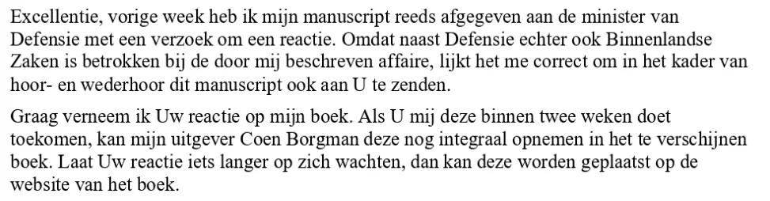

Dokaz · Pismo
Giltay ministru unutrašnjih poslova, 18. marta 2014.
Odlomak
„Ekselencijo, prošle sedmice već sam predao svoj rukopis ministrici odbrane sa zahtjevom za reakciju. Budući da je, međutim, pored Ministarstva odbrane i Ministarstvo unutrašnjih poslova uključeno u aferu koju sam opisao, čini mi se ispravnim da Vam, u skladu s načelom da se sasluša i druga strana, pošaljem i ovaj rukopis. Rado bih čuo Vašu reakciju na moju knjigu. Ako mi je dostavite u roku od dvije sedmice, moj izdavač Coen Borgman još je može u cijelosti uvrstiti u knjigu koja treba izaći. Ako na Vašu reakciju bude trebalo nešto duže čekati, ona se može objaviti na web-stranici knjige.“ Stranica 1, treći i četvrti pasus. Prijevod s nizozemskog; izvorni tekst naveden je ispod.
Izvorni tekst
“Excellentie, vorige week heb ik mijn manuscript reeds afgegeven aan de minister van Defensie met een verzoek om een reactie. Omdat naast Defensie echter ook Binnenlandse Zaken is betrokken bij de door mij beschreven affaire, lijkt het me correct om in het kader van hoor- en wederhoor dit manuscript ook aan U te zenden. Graag verneem ik Uw reactie op mijn boek. Als U mij deze binnen twee weken doet toekomen, kan mijn uitgever Coen Borgman deze nog integraal opnemen in het te verschijnen boek. Laat Uw reactie iets langer op zich wachten, dan kan deze worden geplaatst op de website van het boek.”

Zašto je ovaj dokument važan
Ovo je formalno obavještenje na koje esej upućuje. Rukopis knjige General zataškavanja prije objavljivanja upućen je ministru unutrašnjih poslova, sa zahtjevom za reakciju. Ako bi ona stigla u roku od dvije sedmice, još bi se mogla uvrstiti u knjigu, a u suprotnom bi se mogla objaviti na web-stranici knjige. Pismo navodi i da je ministrica odbrane rukopis dobila sedmicu ranije, tako da su oba ministra dobila priliku odgovoriti, a druga stranica je potvrda o prijemu potpisana u ministarstvu 18. marta 2014. Da je rukopis poslan obama ministrima uz zahtjev za reakciju, od 2016. godine stoji kao neosporena činjenica u presudi po žalbi.
Porijeklo
- Dokument
- Pismo s potvrdom o prijemu, dvije stranice
- Pošiljalac
- Edwin Giltay, novinar, Hag
- Primalac
- Ministar unutrašnjih poslova, Turfmarkt 147, Hag
- Datum
- 18. marta 2014.
- Uručenje
- S naznakom „in persoon afgegeven tegen bewijs van ontvangst“ (‚lično predato uz potvrdu o prijemu‘); stranica 2 je potvrda o prijemu od 18. marta 2014., potpisana u ime Ministarstva unutrašnjih poslova
- Predmet
- Rukopis knjige General zataškavanja, sa zahtjevom za reakciju, koja će biti uvrštena u knjigu ako stigne u roku od dvije sedmice
- Prilog
- Rukopis knjige General zataškavanja
- Jezik
- Nizozemski
- Mjesto čuvanja
- Arhiv autora
- Vidi također
- Giltay ministrici odbrane, 10. marta 2014.Žalbeni sud u Hagu, presuda od 12. aprila 2016. (ECLI:NL:GHDHA:2016:870)
Citirano u: eseju „Zabrana pala, knjiga opstala“ u poglavljima (3) „Šta knjiga otkriva: zataškavanje Srebrenice“ i (7) „Nikada suštinskog odgovora“.
Stranica dokaza: https://
Dokument: https://
Posljednja izmjena 5. septembra 2026., pristupljeno 9. oktobra 2026.

Ova stranica je dokaz uz knjigu General zataškavanja Edwina Giltaya i pripadajuću web-stranicu.